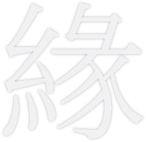

신경 기술이 발달한 23세기, 緣YEON은 단순히 과학을 발전 시키는 데에 그치지 않았습니다.
붉은 실로 인연을 이어주듯, 기억이라는 또 다른 실로 관계를 연결합니다.
우리는 기억 그 자체보다, 기억을 통해 이어지는 사람들을 바라봅니다.
소중한 순간을 보존하고, 삶을 경험하고, 가치 있는 기억을 공유하고, 때로는 끊어진 기억들을 다시 연결하며 서로를 잇습니다.
緣YEON은 기억 너머의 연결을 연구합니다.